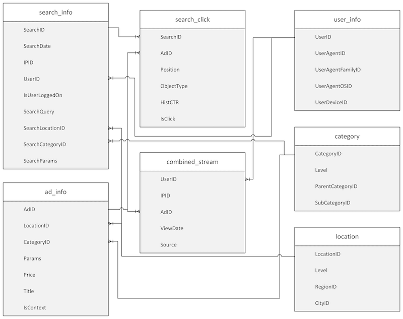
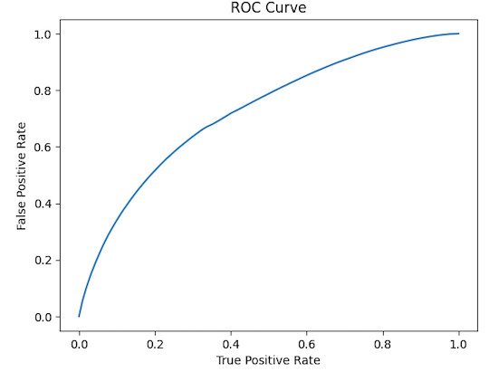

Executive Summary
Background
An online advertising company has two main types of ads on its website: contextual ads and non-contextual ads.
Goal
The goal of the project is to study the factors that affect the click event so that the company can improve service quality and increase the click rate. By enhancing these aspects, the company aims to bring more benefits for product companies and ultimately attract more customers to post these two kinds of advertisements on their website.
Methodology
Firstly, exploratory data analysis (EDA) was conducted on ads and users information to identify patterns and relationships among variables. Subsequently, the datasets were merged, missing values were deleted, and the merged dataset was prepared for training a logistic regression model. As it was a binary classification problem, variables such as 'AdID', 'Position', 'HistCTR', 'CategoryID', 'Price', and 'Title' were included in the logistic regression model.
Results
The analysis revealed that product companies of category '34' were the largest customers of the online advertising company, and non-contextual ads mostly targeted location '3953' and '3960'. The most popular browser family among users was '25' and the most common device was '2014'. The logistic regression model, with features such as position of the ad, history-based estimation of click-through rate, type of ads, price for an ad, and ad title, can be used to predict the click event with reasonable accuracy.
Future work
Future work can focus on finding the missing column that recorded user's phone request in the data 'combined_stream'. This information can be used as the label class to research the important factors that may affect the click event on non-contextual ads.
Datasets Details

The whole dataset consists of 7 files, which were divided into two categories based on their features: contextual ads and non-contextual ads.
- The contextual ads category includes 'search_click'.
- The non-contextual ads category includes 'combined_stream'.
- 'ad_info', 'search_info', 'location', 'category', and 'user_info' serve as base datasets for the two categories.
Therefore, the analysis was also segmented into two parts. For contextual ads, data 'search_click' and 'ad_info' were joined to form a merged dataset with 7 unique fields, while data 'combined_stream', 'ad_info', and 'search_info' were joined to form a merged dataset for non-contextual ads. The goal was to build a clickthrough rate prediction model for both contextual and non-contextual ads.
Methods
Tools
The following tools were used in the project:
- SparkSession to manage the big data.
- Spark.read to read in all the files.
- Spark.sql to explore the data, such as merging, counting, and summarizing.
- describe() to obtain summary statistics.
- createOrReplaceTempView() to convert dataframes into SQL tables.
- df.na.drop() to clean the data by dropping NA values.
- df.toPandas() to convert the data into 'pandas.core.frame.DataFrame' format.
- The matplotlib package to visualize the SQL result.
- Transformers and encoders to perform feature engineering.
- LogisticRegression to build the model to predict whether there is a click on the contextual ads.
- Pipeline to chain the process.
Exploratory Data Analysis
Upon loading the complete dataset, thorough exploration of the ads and users information was performed.
For the ads information:
- Summary statistics such as mean value, standard deviation, minimum and maximum value were computed for the ads' price.
- The average price of ads for different categories and the number of ads for each category were determined.
- The average price of non-contextual ads targeted at different locations, along with the number of non-contextual ads for each location, were analyzed.
For the users' information:
- the most frequently used browser family and device type were identified.
Data Preparation
- The 'search_click' and 'ad_info' dataframes were registered as SQL tables and joined using the 'left join' syntax.
- The column 'IsClick' was transformed into a categorical variable and categorized into a new column called "IsClick_class".
- The data types of the remaining fields were checked:
- 'IsClick_class' and 'title' were STRING
- The rest were INT.
Hypothesis
Position, HistCTR, Category, Price, and Title are statistically significant variables which can influence the IsClick_class.
Model
A logistic regression model was adopted for prediction of the categorical outcome variable 'IsClick_class' based on the set of predictors. The categorical variables were indexed using StringIndexer and then converted into one-hot encoded variables using OneHotEncoder. The feature columns were combined using VectorAssembler, and a Pipeline was used to specify the machine learning workflow.
To evaluate the performance of the model, the ROC curve was plotted, and the AUC value was calculated. The AUC value was found to be 0.72, indicating good predictive performance.
Conclusions
After conducting the EDA analysis, several key findings were identified. The online advertising company had a total of 36,892,885 ads, with an average price of approximately 4,651,622.64 dollars. Category 19 had the highest average price of ads, while category 8 had the lowest. Category 34 ads were the most popular, while category 8 ads had the fewest customers. The company may need to adjust the promotion mode for category 8 ads to improve their visibility.
Non-contextual ads primarily targeted locations 3953 and 3960, with the highest average price of non-contextual ads at location 3682. The most commonly used browser family was type 25, and the most commonly used device was type 2014. The company can compare the attractiveness of the type 25 browser interface and the reader-friendliness of category 8 device type to identify factors that attract customers and improve service quality.
The model identified position, HistCTR, category, price, and title as important variables that influence click events. The company can focus on these variables to increase the click rate, which ultimately leads to higher ad visibility and profitability.
Future Work
In the future, additional work can be done to improve the analysis. One possible step is to locate the missing column that records user phone requests in the "combined_stream" dataset. This column can be used as the label class to be predicted. Relevant datasets can be joined with "combined_stream," and variables that may help predict the label can be selected. Transformers and Encoders can be used to prepare the data for model training.
If it is a binary classification problem, the logistic regression model can be used. For multiple classification problems, decision trees and random forests are viable options. Model accuracy can be evaluated based on metrics such as AUC. This will help to identify the significant factors that affect click events on both contextual and non-contextual ads. The company can then take steps to increase click rates and attract more product companies to post advertisements on the website.